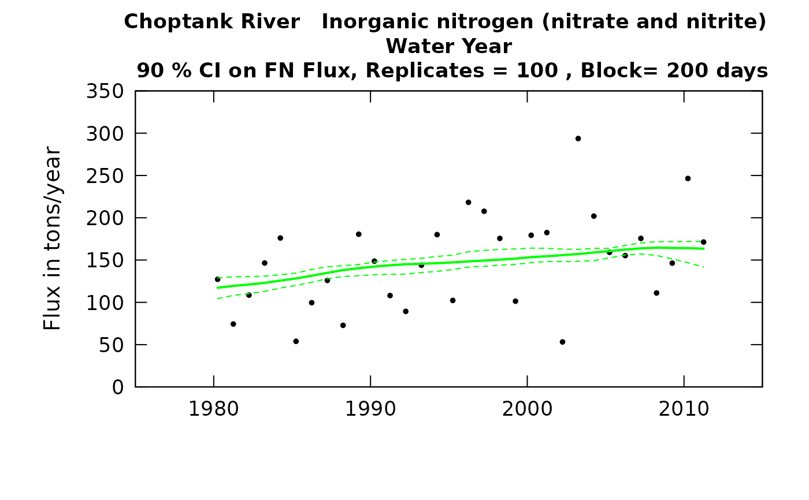

R/plotCIs.R
plotFluxHistBoot.RdUses the output of modelEstimation in the EGRET package (results in the named list eList),
and the data frame CIAnnualResults (produced by EGRETci package using scripts described in
the vignette) to produce a graph of annual flux, flow normalized flux, and confidence bands
for flow-normalized flux. In addition to the arguments listed below, it will accept any
additional arguments that are listed for the EGRET function plotFluxHist.
plotFluxHistBoot( eList, CIAnnualResults, yearStart = NA, yearEnd = NA, plotFlowNorm = TRUE, fluxUnit = 9, fluxMax = NA, col.pred = "green", printTitle = TRUE, cex.main = 1.1, ... )
| eList | named list with at least the Daily, Sample, and INFO dataframes. Created from the EGRET package, after running |
|---|---|
| CIAnnualResults | data frame from ciBands (needs nBoot, probs, and blockLength attributes) |
| yearStart | numeric is the calendar year containing the first estimated annual value to be plotted, default is NA (which allows it to be set automatically by the data) |
| yearEnd | numeric is the calendar year just after the last estimated annual value to be plotted, default is NA (which allows it to be set automatically by the data) |
| plotFlowNorm | logical variable if TRUE flow normalized line is plotted, if FALSE not plotted |
| fluxUnit | number representing entry in pre-defined fluxUnit class array. |
| fluxMax | number specifying the maximum value to be used on the vertical axis, default is NA (which allows it to be set automatically by the data) |
| col.pred | character prediction color |
| printTitle | logical |
| cex.main | numeric title scale |
| ... | graphical parameters |
library(EGRET) eList <- Choptank_eList CIAnnualResults <- Choptank_CIAnnualResults plotFluxHistBoot(eList, CIAnnualResults, fluxUnit=5)if (FALSE) { CIAnnualResults <- ciCalculations(eList, nBoot = 100, blockLength = 200) plotFluxHistBoot(eList, CIAnnualResults, fluxUnit=5) }